Einführung in die Nutzung der
INGO-Webapplikation
Hinweis: Aktuelle Informationen zu den neuesten Funktionalitäten von PINGO finden Sie in unserem Blog unter blogs.upb.de/pingo.
1. Nutzung von PINGO als Dozent
1.3 Eine Umfrage mithilfe der Schnellstart-Funktion erstellen
1.4.1 Eine Umfrage fortsetzen oder wiederholen
1.4.2 Einer Session weitere Umfragen hinzufügen
1.5 Eine Umfrage editieren und korrekte Antworten setzen
1.6 Eine benutzerdefinierte Session erstellen und alle Sessions betrachten
1.7.1 Eine eigene Frage definieren
1.7.2 Fragen mithilfe von Tags finden und editieren
1.7.3 Öffentliche Fragen finden und zum eigenen Katalog hinzufügen
1.7.4 Fragen aus dem eigenen Katalog in einer Session stellen
1.8 Formeldarstellung in Fragen/Umfragen und Antworten
2. Nutzung von PINGO als Teilnehmer an einer Umfrage
1. Nutzung von PINGO als Dozent
Bitte beachten Sie, dass die Dozentensicht für aktuelle Versionen von Mozilla Firefox, Google Chrome und Apple Safari optimiert wurde.
1.1 Ein Konto anlegen
Hinweis: Dieser Schritt ist nur erforderlich, wenn Sie noch keine Zugangsdaten von uns erhalten haben.
Zur Nutzung der Applikation ist ein Benutzerkonto erforderlich, welches unter pingo.upb.de/users/sign_up erstellt werden kann. Hier müssen nun die für die Anmeldung erforderlichen Daten angegeben werden. Nachfolgend wird die Registration mit einem Klick auf "Registrieren" abgeschlossen.
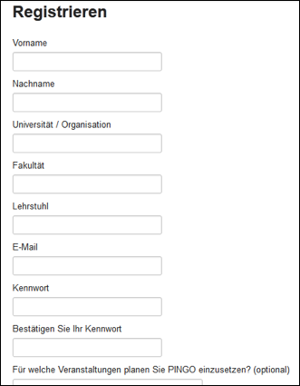
1.2 Als Dozent anmelden
Um zur Dozentensicht zu gelangen, ist ein Benutzerkonto notwendig (für die Erstellung eines Benutzerkontos siehe Abschnitt 1.1). Öffnen Sie pingo.upb.de und klicken Sie in der Navigationsleiste auf "Einloggen". Geben Sie anschließend Ihre Nutzerdaten ein.
1.3 Eine Umfrage mithilfe der Schnellstart-Funktion erstellen
Die Schnellstart-Funktion ermöglicht es eine Session und gleichzeitig eine erste Umfrage zu erstellen. Bei einer Session kann es sich beispielsweise um eine Lehrveranstaltung handeln. Wählen Sie dazu den Schnellstart-Link innerhalb der Dozentensicht. Hier kann die Anzahl der Antworten, die Dauer und die Art (Single/Multiple Choice) der Umfrage angegeben werden. Wird zusätzlich "merken" ausgewählt, werden Ihre Eingaben für eine erneute Nutzung der Funktion gespeichert und sind beim nächsten Aufruf bereits in das Menü eingetragen. Nach Starten der Umfrage durch einen Klick auf „Erstellen“ werden Sie direkt zur Sicht auf die neue Session mit der bereits laufenden Umfrage weitergeleitet.
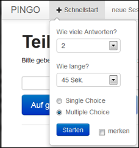
1.4 Die Session-Sicht
Hier kann die Session mit ihrer zuletzt erstellten Umfrage betrachtet werden. Ist die Umfrage noch nicht abgelaufen, wird dies angezeigt. Zusätzlich wird ein Countdown heruntergezählt, sofern nicht die Option "ohne Countdown" beim Erstellen der Umfrage ausgewählt worden ist. Erreicht der Zähler des Countdowns die letzten zehn Sekunden, wird die Anzeige rot eingefärbt und vergrößert. Es wird auch die ungefähre Anzahl an Nutzern angezeigt, die sich bereits mit Ihrer Session verbunden haben und gerade auf eine Umfrage warten oder an einer Umfrage teilnehmen.
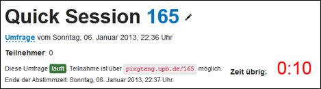
Die Anzahl der Teilnehmer einer Umfrage werden zur Laufzeit aktualisiert; am Ende der Umfrage werden die Abstimmungsergebnisse in einem Balkendiagramm dargestellt.
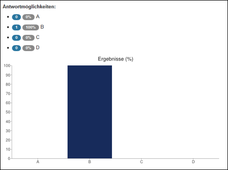
(Ergebnisse der Umfrage, nachdem eine Person abgestimmt hat.)
Unterhalb des Balkendiagramms kann die Umfrage während ihrer Laufzeit gestoppt werden.
(Umfrage soll in 2 Minuten enden)
Ebenso können die Umfragen der Session angesehen,gelöscht und editiert werden.
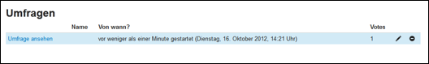
Weiterhin kann der Name der Session sowie eine Beschreibung derselben durch einen Klick auf das Beistift-Icon neben dem Namen editiert werden. Das Icon neben dem Bleistift-Icon öffnet die PINGO-Applikation im Vollbildmodus.
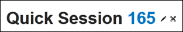
Auch der Name einer Umfrage kann schnell und einfach durch einen Klick auf „Umfrage“ bearbeitet werden.

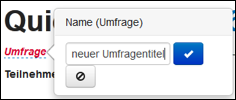
Der Name der Umfrage wird den Teilnehmern beim Wiederholen oder Fortsetzen der Umfrage auf dem Endgerät angezeigt.
1.4.1 Eine Umfrage fortsetzen oder wiederholen
Ist eine Umfrage abgelaufen oder wurde sie durch den Nutzer manuell gestoppt, besteht die Möglichkeit dieselbe fortzusetzen oder zu wiederholen.
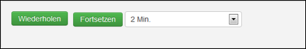
Bei einem Klick auf „Fortsetzen“ wird die Umfrage (hier: für weitere 2 Minuten) fortgesetzt, d.h. Teilnehmer, die bereits abgestimmt haben, können nicht erneut abstimmen. Es können lediglich neue Personen an der Umfrage teilnehmen und die Ergebnisse werden daraufhin entsprechend ergänzt.
Bei einer Nutzung der Option „Wiederholen“ wird eine neue Umfrage erstellt, welche die gleichen Eigenschaften(Anzahl der Antworten, Art der Umfrage) besitzt (Dauer der neuen Umfrage hier: 2 Minuten).
Die Ergebnisse der Wiederholung werden mit den Ergebnissen der originalen Umfrage im Balkendiagramm verglichen.
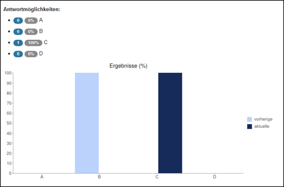
(Ergebnisse der Umfrage, nachdem eine Person für C gestimmt und in der originalen Umfrage eine Person für B gestimmt hat)
In der Liste der Umfragen wird die Wiederholung entsprechend gekennzeichnet.
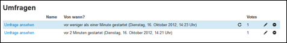
Durch einen Klick auf das Wiederholungssymbol besteht die Möglichkeit Einblicke in das Antwortverhalten der Teilnehmer zu gewinnen. In einem neuen Fenster wird angezeigt, ob und wie Nutzer sich bei der Wiederholung umentschieden haben. Es wird auch deutlich, ob neue Teilnehmer abgestimmt haben, die bei dem ersten Durchlauf der Umfrage nicht teilgenommen haben und ob Teilnehmer des ersten Durchgangs bei der Wiederholung nicht noch einmal abgestimmt haben.
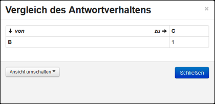
(Eine Person hat im ersten Durchgang für B und im zweiten für C gestimmt)
1.4.2 Einer Session weitere Umfragen hinzufügen
Um der Session weitere Umfragen anzufügen kann das Menü auf der rechten Seite der Session-Sicht genutzt werden. Der Unterschied zur Schnellstart-Funktion liegt darin, dass hier keine neue Session erstellt wird, sondern die aktuell ausgewählte Session erweitert wird. Bei einem Klick auf "Erstellen" wird die Umfrage gestartet und als aktuelle Umfrage angezeigt.

Die vorherigen Umfragen sowie die neu erstellte Umfrage erscheinen dann in der Umfragenliste.
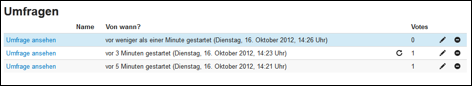
1.5 Eine Umfrage editieren und korrekte Antworten setzen
Zur Bearbeitung einer Umfrage klicken Sie auf das Bleistift-Icon in der Umfragenliste. Dadurch erhalten Sie Zugriff auf folgende Seite:
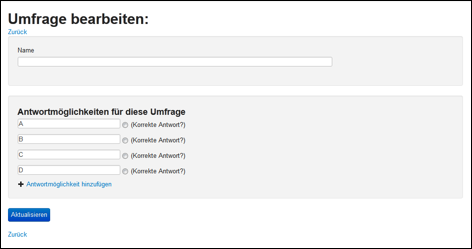
Hier können der Name der Umfrage, sowie die Namen der Antwortmöglichkeiten verändert werden. Eine Änderung des Umfragennamens hat auch zur Folge, dass beim Fortsetzen oder Wiederholen der Umfrage der Umfragenname auch auf den Endgeräten der Teilnehmer dargestellt wird. Ebenfalls können neue Antwortmöglichkeiten hinzugefügt werden. Um das Antwortverhalten (siehe Abschnitt 1.4.1) zusammenfassen zu können und nur unter dem Aspekt zu betrachten, wie viele Nutzer sich bei der Wiederholung einer Umfrage von der falschen Antwort zur korrekten Antwort (und umgekehrt) umentschieden haben, kann auch angegeben werden, welche Antworten einer Umfrage korrekt sind.
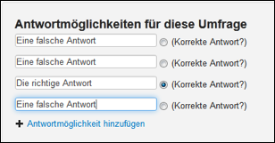
Nach einem Klick auf das Wiederholungssymbol kann nun auch die Ansicht umgeschaltet werden.
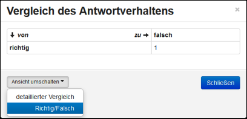
Dabei müssen die korrekten Antworten entweder nur in der originalen Umfrage gesetzt werden oder aber bei der originalen und bei der wiederholten Umfrage übereinstimmen.
1.6 Eine benutzerdefinierte Session erstellen und alle Sessions betrachten
Neben der Schnellstart-Funktion besteht auch die Möglichkeit eine Session über „neue Session“ in der Navigationsleiste anzulegen. Hierbei können direkt der Titel und die Beschreibung vom Benutzer definiert werden. Zusätzlich kann die Formel-Unterstützung aktiviert werden, womit TeX-Formeln in Fragen und Antwortoptionen verwendbar werden(siehe 1.8).

Mit der Auswahl von „Sessions“ in der Navigationsleiste erhalten Sie einen Überblick über alle von Ihnen erstellten Sessions.
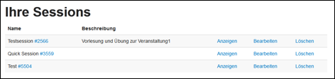
Hier können Sie Ihre Sessions hinsichtlich Name und Beschreibung bearbeiten, erstellte Sessions löschen oder mit einem Klick auf „Anzeigen“ die zugehörigen Umfragen betrachten oder auch neue Umfragen hinzufügen, wie bereits unter 1.4.1 beschrieben.
1.7 Der Fragenkatalog
Der Fragenkatalog ist über "Fragen" in der Navigationsleiste erreichbar.
1.7.1 Eine eigene Frage definieren
Die Definition eigener Fragen ist durch einen Klick auf „Frage erstellen“ möglich.
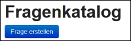
Anschließend kann über die Tabs am linken Rand der Typ der Frage („Single“, „Multi“) ausgewählt werden.
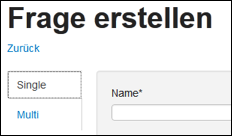
Weiterhin kann der Fragenname gesetzt werden, welcher dem späteren Umfragenteilnehmer auf dem Endgerät angezeigt wird. Die Fragen können mithilfe von Tags/Schlagwörtern kategorisiert werden, um sie nach Themen und Veranstaltungen zu ordnen. Tags dienen dem Dozenten zur Sortierung und dem schnelleren Auffinden von Fragen. Sie haben keine Auswirkungen auf Teilnehmer einer Umfrage.
Fragen können als öffentlich gekennzeichnet werden, um anderen Dozenten Zugriff auf diese Frage zu ermöglichen (siehe 1.7.3).
Antwortmöglichkeiten können hinzugefügt und entfernt werden. Ebenso besteht die Möglichkeit korrekte Antworten zu markieren, wodurch bei der Wiederholung von Umfragen eine zusammengefasste Auswertung des Wahlverhaltens der Teilnehmer durchgeführt werden kann (siehe auch 1.5).
Durch einen Klick auf „OK“ wird die Fragenerstellung abgeschlossen.

1.7.2 Fragen mithilfe von Tags finden und editieren
Unter „Fragen“ in der Navigationsleiste findet sich auch eine Liste mit den aktuell vorhandenen Tags.

Hier kann zwischen „Öffentlich“ und „Eigene Fragen“ gewählt werden. Je nach Auswahl werden die Tags des eigenen Fragekatalogs oder die Tags aller öffentlichen Fragen angezeigt. Sollen dem Dozenten nun alle Fragen, die mit „Veranstaltung1“ markiert sind, angezeigt werden, so genügt ein Klick auf das entsprechende Tag.

Hierbei werden öffentliche Fragen mit einem Globus gekennzeichnet. Alle eigenen Fragen können bearbeitet und gelöscht werden.
1.7.3 Öffentliche Fragen finden und zum eigenen Katalog hinzufügen
Durch Auswahl von „Öffentlich“ unter „Fragen“ werden alle Fragen und deren Tags sichtbar, die von einem beliebigen PINGO-Nutzer als öffentlich markiert wurden. Nun erfolgt die Suche nach Fragen mithilfe der Tags(siehe 1.7.2). Durch einen Klick auf eine Frage kann diese angesehen werden. Eigene als öffentlich eingestellte Fragen können editiert oder gelöscht werden.

Bei Auswahl einer Frage, die von einem anderen Nutzer eingestellt wurde (hier bspw.: „Welche Aussagen sind korrekt?“), werden alle Informationen zu dieser Frage angezeigt und es besteht die Option diese Frage in den eigenen Fragenkatalog zu übernehmen.
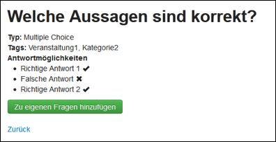
Wählt man nun „Zu eigenen Fragen hinzufügen“ so wird die angezeigte Frage kopiert und zu den eigenen Fragen hinzugefügt. Dort kann diese bearbeitet werden, ohne dass die Originalversion des Erstellers dieser Frage von den Änderungen betroffen ist.

1.7.4 Fragen aus dem eigenen Katalog in einer Session stellen
Alle vordefinierten Fragen, die unter „Eigene Fragen“ zu finden sind, können in einer Session direkt als Umfrage an die Teilnehmer gestellt werden.

Auch hier können Fragen mithilfe der Tags (hier: „Veranstaltung1“) schnell ausgewählt werden.
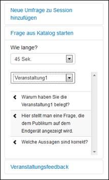
Beim Berühren einer Frage mit dem Mauszeiger werden Fragenname und Antwortoptionen angezeigt.
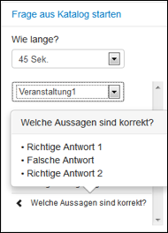
Durch einen Klick auf den Pfeil neben dem Fragennamen wird die Frage direkt als Umfrage mit der ausgewählten Zeit (hier: 45 Sek.) gestartet.

1.8 Formeldarstellung in Fragen/Umfragen und Antworten
Das PINGO-System unterstützt mithilfe von MathJax auch eine bessere Darstellung von Formeln. Diese müssen dazu von „$$“ oder „$“ umschlossen werden. Dadurch kann z.B. die nachfolgende Frage angemessener dargestellt werden.
Durch Verwendung eines einzelnen Dollarzeichens ($) Zeichen können Sie natürlich auch Text mit Formeln mischen, z. B.: "es gibt min. $n^2$ neue Verbindungen".
Formeln mit $ werden als "inline" (im Absatz) dargestellt, Formeln mit $$ werden abgesetzt (als Absatz) dargestellt.
Hilfe zur Formatierung finden Sie in diesem PDF-Dokument, bei einer Google-Suche nach "TeX Formulas" oder bei Wikipedia.


Diese Darstellung erfolgt auch beim Stellen der Frage in einer Session, sofern die Formel-Unterstützung beim Erstellen oder Bearbeiten der Session aktiviert wurde.


Auch auf den Endgeräten der Teilnehmer werden die Formeln in dieser Form dargestellt.
1.9 Kontoeinstellungen
Im Reiter „Allgemeine Einstellungen“ der Kontoeinstellungen besteht die Möglichkeit das Abspielen eines Tons zu aktivieren. Dieser wird als Hinweis abgespielt, wenn die letzten 10 Sekunden des Countdowns einer Umfrage angebrochen sind. Auch das Abonnieren bzw. Abbestellen unseres Newsletters kann hier geregelt werden.
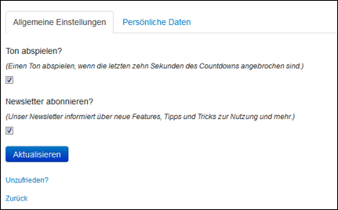
Weiterhin können Sie die Angaben, die Sie bei der Registration gemacht haben, im Reiter „Persönliche Daten“ überarbeiten.

2. Nutzung von PINGO als Teilnehmer an einer Umfrage
Jeder Session wird vom System ein Zugangscode zugewiesen. Dieser ist für die Teilnehmern erforderlich, um an der jeweils zuletzt erstellten Umfrage einer Session teilzunehmen.
Damit ein Nutzer auf die obige Session zugreifen kann, muss dieser die Startseite pingo.upb.de aufrufen und dort die Session Nr. (hier: 165) eingeben.

Da noch keine Umfrage gestartet worden ist, wird der Nutzer gebeten zu warten.
Im Folgenden startet der Dozent die nachfolgende Umfrage:

Der Teilnehmer erhält nun die Möglichkeit eine der Antworten auszuwählen.

Nach dem Abstimmen ist ein erneutes Abstimmen durch den selben Nutzer nicht möglich. Nutzer werden automatisch (d. h. ohne manuelles Aktualisieren) im Rahmen einer Session bei neuen Umfragen gebeten erneut abzustimmen.
2.1 Die Teilnehmeransicht beim Stellen einer vordefinierten Frage oder Wiederholen einer editierten Umfrage
Beim Stellen einer vordefinierten Frage oder beim Wiederholen einer editierten Umfrage werden dem Teilnehmer zusätzlich der Fragentitel und die Antwortoptionen (auch mit Formelunterstützung) angezeigt.
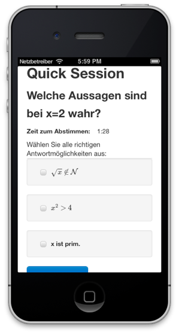